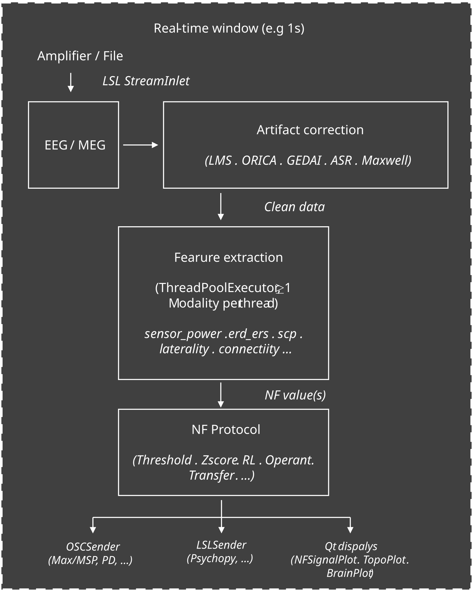

User Guide#
This page introduces the core concepts behind real-time M/EEG processing and explains how MNE-RT maps those concepts onto a concrete session workflow. No prior BCI or neurofeedback experience is required.
Real-time M/EEG processing#
Real-time M/EEG processing refers to any pipeline that acquires brain signals, extracts features as fast as the data arrives, and delivers results — feedback, monitoring outputs, or triggers — within a latency budget of milliseconds to seconds. MNE-RT covers the full range: continuous neurofeedback, event-related ERP/TFR analysis, BCI decoding, and passive brain monitoring.
|
① Brain signal
EEG or MEG electrodes pick up cortical oscillations
from the scalp surface in real time.
|
② Feature extraction
A signal processing pipeline distils the raw signal into
one number per window — e.g., alpha power, laterality, or source connectivity.
|
③ Feedback
The feature value drives a visual, auditory, or
haptic output signal — or is streamed for offline analysis or BCI control.
|
Clinical applications include ADHD (theta/beta training), chronic tinnitus (auditory cortex and thalamo-cortical desynchronisation), post-stroke motor rehabilitation (sensorimotor rhythm training), and depression (frontal alpha asymmetry training).
MNE-RT Session Workflow#
Every session follows the same three-phase structure:
RTStream.connect_to_lsl()
RTStream.record_baseline()
RTStream.record_main()
Phase 2 (baseline) is optional for sensor-space modalities but required for source-space modalities (it provides the noise covariance used to build the inverse operator) and for ERD/ERS-based modalities (it provides the reference power).
Closed-Loop Architecture#
The diagram below shows how data flows inside MNE-RT during a processing window:
{kind=link}

All modality computations run in a
concurrent.futures.ThreadPoolExecutor, so slow operations (e.g.
source-space inverse) never block the feedback display.
Key Concepts#
Feature Modality#
A modality is the brain feature that is being fed back to the participant. MNE-RT implements 20 modalities across sensor space, connectivity, and source space. You select one or more per session:
| Category | Modalities | Typical use case |
|---|---|---|
| Sensor power | sensor_power · band_ratio · erd_ers · laterality · laterality_erd_ers | Alpha, SMR, or theta training; motor imagery |
| Time-domain | hjorth · entropy · scp · instantaneous_phase | SCP biofeedback; phase-triggered stimulation |
| Spectral peak | spectral_centroid · argmax_freq · peak_alpha_freq | Individual alpha frequency tracking |
| Connectivity | sensor_connectivity · connectivity_ratio · cfc_sensor · sensor_graph | Inter-hemispheric or thalamocortical coupling |
| Source space | source_power · source_connectivity · source_graph | Region-specific analysis; tinnitus, depression |
See Real-time Feature Modalities for the mathematical definition of each.
Feedback Protocol#
A protocol decides when to deliver a reward and how much. It sits between the raw modality value and the feedback display. MNE-RT ships ten protocols:
feature value ──▶ Protocol ──▶ (crossed: bool, magnitude: float)
│
├── ThresholdProtocol fixed or slowly-adapting threshold
├── ZScoreProtocol running z-score; self-calibrating
├── PercentileProtocol tracks own rolling distribution
├── LinearTrendProtocol rewards sustained directional change
├── RLProtocol ε-greedy; finds threshold automatically
├── TransferProtocol seeded from a prior session file
├── OperantProtocol FR / VR / FI / VI reward schedules
├── ShamProtocol double-blind sham wrapper
├── UpDownStaircaseProtocol converges to target success rate
└── MultiBandProtocol two-band AND / OR logic
See NF Protocols for formulas and selection guidance.
Feature Combiner#
A feature combiner reduces N parallel feature values to a single mixed
score. This is useful when several modalities capture complementary aspects of
the brain state and you want one unified number for the protocol and display.
MNE-RT provides four combiners in mne_rt.combiners:
Class |
Strategy |
|---|---|
Normalised weighted sum |
|
Weighted geometric mean |
|
Z-score each feature against a warmup baseline, then take the Euclidean
norm divided by |
|
Pass the feature vector to any fitted |
Example — blend alpha power and interhemispheric laterality:
from mne_rt.combiners import WeightedSumCombiner
combiner = WeightedSumCombiner(
weights={"sensor_power": 0.6, "laterality": 0.4}
)
# Call once per window inside your analysis loop:
mixed = combiner.combine({"sensor_power": 1.5, "laterality": 0.3})
Analysis Window#
The analysis window (winsize) is the length of the EEG/MEG segment
used to compute each feature value. Shorter windows give more frequent updates
(lower latency) but noisier estimates; longer windows give more stable estimates
at the cost of update frequency.
| Window size | Update rate | Best for |
|---|---|---|
| 0.5 s | 2 Hz | Fast motor-imagery, SCP, instantaneous phase |
| 1.0 s | 1 Hz | Standard alpha / SMR training (recommended default) |
| 2.0 s | 0.5 Hz | Source space, connectivity (needs longer segment for stable PSD) |
| 4.0 s | 0.25 Hz | Low-frequency bands (delta, theta); graph learning |
Step-by-Step: First Session#
Step 1 — Install MNE-RT
pip install "mne-rt[full]"
Step 2 — Run the demo (no hardware needed)
The demo streams simulated EEG internally and runs a full real-time session with live topo display:
mne-rt demo --duration 60 --modality sensor_power erd_ers
Step 3 — Record a baseline
Connect your amplifier, then record a 2-minute resting-state baseline. MNE-RT detects bad channels, computes ICA, and saves a noise covariance file:
mne-rt baseline --subject sub01 --subjects-dir /data/subjects
Or in Python:
from mne_rt import RTStream
nf = RTStream(
subject_id="sub01",
session="01",
subjects_dir="/data/subjects",
montage="easycap-M1",
)
nf.connect_to_lsl() # connects to live amplifier
nf.record_baseline(duration=120)
Step 4 — Run the real-time session
from mne_rt.protocols import ZScoreProtocol
proto = ZScoreProtocol(direction="up", zscore_threshold=0.5, warmup_windows=20)
nf.record_main(
duration=600, # 10 minutes
modality=["sensor_power"], # alpha power
protocol=proto,
show_nf_signal=True,
show_topo=True,
track_artifact_rate=True, # flag windows with artefacts
track_snr=True, # per-window SNR log
)
nf.save() # writes BIDS-compatible output
With show_nf_signal=True, the protocol’s current threshold — fixed for
ThresholdProtocol, or converted from the z-score
boundary here since proto is a ZScoreProtocol
— is drawn live as a dashed line on the NFPlot trace, so the participant
(or operator) can see exactly where the reward boundary sits at every moment.
Step 5 — Inspect results
import json
data = json.load(open("sub-sub01_ses-01_task-nf_beh.json"))
nf_values = data["data"]["sensor_power"]
print(f"Mean alpha power : {sum(nf_values)/len(nf_values):.4f}")
print(f"Artifact rate : {nf.artifact_rate:.1%}")
Multi-Session Protocols#
For longitudinal training studies, MNE-RT provides two patterns:
Multi-block session — run several recording blocks with rest periods in between, all within one Python call:
nf.run_blocks(
blocks=[
{"duration": 300, "modality": ["sensor_power"]},
{"duration": 300, "modality": ["sensor_power"]},
],
rest_duration=60, # 60 s rest between blocks
)
# Each block writes its own files, under run-01, run-02, ...
# Per-block results: nf.block_nf_data, nf.block_artifact_rates, and
# nf.block_results for rewards, window onsets and dropped-window counts.
Cross-session transfer — seed the protocol’s running statistics from the previous session’s file so rewards start immediately (no warmup phase):
from mne_rt.protocols import TransferProtocol
proto = TransferProtocol(
fname="sub-sub01_ses-01_task-nf_beh.json",
modality="sensor_power",
direction="up",
zscore_threshold=0.5,
)
nf.record_main(duration=600, modality=["sensor_power"], protocol=proto)
Offline replay — re-run the exact same signal-processing pipeline on a previously recorded file, useful for parameter tuning without a participant:
nf.replay(
fname="sub-sub01_ses-01_task-nf_raw.fif",
duration=600,
modality=["erd_ers"],
)
Choosing a Modality and Protocol#
| Clinical goal | Modality | Protocol | Notes |
|---|---|---|---|
| Alpha up-training | sensor_power | ZScoreProtocol | Classic relaxation / pain / tinnitus protocol |
| Motor imagery (BCI) | laterality / erd_ers | ThresholdProtocol | C3 vs C4 ERD for left/right hand imagery |
| ADHD (theta/beta) | band_ratio | PercentileProtocol | Reward when theta/beta ratio drops below 75th percentile |
| Tinnitus (source) | source_power / source_connectivity | ZScoreProtocol | Requires MRI and baseline inverse operator |
| SCP biofeedback | scp | ThresholdProtocol | Requires DC-coupled amplifier; epilepsy, attention |
| No calibration data | any | RLProtocol | Self-calibrating — no baseline or warmup needed |
Quality Monitoring#
MNE-RT tracks two session-level quality metrics automatically when requested:
nf.record_main(
...,
track_artifact_rate=True, # default threshold: 100 µV
track_snr=True,
)
# After session:
print(f"Artifact rate : {nf.artifact_rate:.1%}") # fraction of windows with any channel > 100 µV
print(f"Mean SNR : {sum(nf.snr_data)/len(nf.snr_data):.1f} dB")
A session with artifact rate > 20 % should be reviewed for electrode impedance issues or movement artefacts before proceeding.
For detailed real-time quality control, see the
BadChannelDetector and
RiemannianPotatoDetector classes documented in
Artifact Correction.
Further Reading#
Real-time Feature Modalities — mathematical definitions of all 20 feature modalities
NF Protocols — reward protocol formulas, selection table, and examples
Artifact Correction — artifact correction algorithms and benchmarks
API Reference — complete class and function reference
CLI — full CLI reference (
mne-rt run,mne-rt baseline,mne-rt demo)